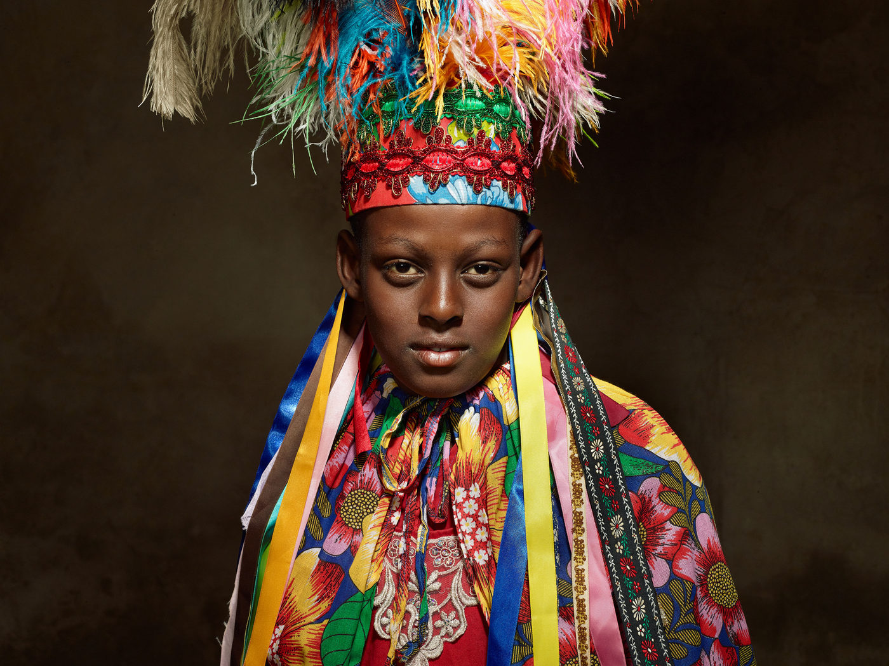

Tiago Aguiar explora a devoção e celebração da Festa do Rosário em sua primeira mostra individual na Uncool Gallery

"Rusá: BraSilian Devotion and Celebration" destaca a complexidade da identidade brasileira por meio da fotografia relacional e da instalação fotográfica, sob o olhar do artista e congadeiro mineiro.
A Uncool Gallery, localizada no Brooklyn, Nova York, abre suas portas para "Rusá: BraSilian Devotion and Celebration", a primeira exposição individual do artista visual e fotógrafo Tiago Aguiar. A mostra, que vai até dia 5 de outubro de 2024, mergulha na rica tapeçaria cultural da Festa do Rosário, um evento religioso celebrado anualmente em Serro, Minas Gerais. Reconhecida como patrimônio cultural pelo IPHAN, a festa representa uma das tradições mais antigas e profundamente enraizadas na cultura afro-brasileira.
A exposição de Tiago Aguiar é muito mais do que um simples registro documental. Trata-se de uma imersão visual e emocional na cultura brasileira, vista através do olhar de um congadeiro que vivencia o evento como parte integrante de sua identidade. Ao trazer para a galeria a devoção e a celebração da Festa do Rosário, Aguiar expõe a complexidade das identidades envolvidas, muitas vezes marginalizadas fora desse contexto religioso e cultural.
Tiago Aguiar, que também assume o papel de curador desta exposição, utiliza a fotografia relacional para retratar personagens que participam da Festa do Rosário. Essa abordagem coloca o retratado como parte ativa na construção da imagem, criando uma conexão mais profunda entre o artista, o sujeito e o público. O processo fotográfico de Aguiar valoriza as nuances das identidades individuais dentro de um contexto coletivo, celebrando a diversidade e a riqueza cultural dos congadeiros.
A exposição se divide em três núcleos: Dançantes, Caravana e Quermesse. Em Dançantes, Tiago Aguiar capturou retratos íntimos dos participantes da festa em um estúdio improvisado, revelando detalhes que geralmente são ofuscados pela grandiosidade da celebração. Esses retratos, em preto e branco, oferecem uma visão mais próxima das expressões faciais e da emoção transmitida pelos congadeiros durante o evento.
No núcleo Caravana, o foco se volta para os barraqueiros itinerantes que, ao longo dos anos, criaram uma relação simbiótica com a festa. Suas barracas são parte essencial do cenário festivo, mas suas histórias muitas vezes passam despercebidas. Aguiar busca iluminar essas narrativas invisíveis, destacando o papel fundamental desses personagens na construção da atmosfera cultural da festa.
Já em Quermesse, Aguiar presta homenagem aos fotógrafos populares que documentam festividades no Brasil. Ele recria essa tradição ao montar um estúdio temporário na própria festa, capturando imagens espontâneas dos participantes. As fotos revelam a autenticidade e a energia dos frequentadores, preservando a essência comunitária do evento.
Além das fotografias, "Rusá: BraSilian Devotion and Celebration" inclui elementos instalativos que dialogam com as tradições da Festa do Rosário. Grandes impressões em lona evocam as texturas e o movimento dos trajes dos congadeiros, enquanto monóculos com slides oferecem uma viagem ao passado, remetendo às práticas fotográficas analógicas que marcaram a história do Brasil. Essa combinação de elementos contemporâneos e tradicionais não apenas conecta o público à celebração, mas também reflete sobre a evolução da própria arte fotográfica ao longo do tempo.
A exposição cria, assim, um espaço imersivo que convida os espectadores a explorar as camadas de significados que compõem a festa e a cultura afro-brasileira. Ao destacar a conexão íntima entre fé, celebração e identidade, Aguiar amplia o alcance da arte relacional, questionando convenções e oferecendo um retrato singular de uma das mais importantes tradições do Brasil.
A prática artística de Tiago Aguiar dialoga com a fotografia etnográfica, mas subverte suas normas ao permitir que os próprios retratados participem ativamente da criação de suas imagens. Essa abordagem crítica é parte de um movimento contemporâneo de artistas brasileiros que exploram a interseção entre cultura popular e arte conceitual. Em um cenário global onde as representações do Brasil frequentemente se resumem a estereótipos, "Rusá: BraSilian Devotion and Celebration" oferece uma visão interna e intimista da cultura brasileira, abrindo espaço para uma compreensão mais profunda e respeitosa.
Ao trazer a Festa do Rosário para o público de Nova York, Aguiar também confronta a maneira como as tradições brasileiras são vistas no exterior, muitas vezes por uma lente exótica e superficial. A exposição na Uncool Gallery oferece uma rara oportunidade de vivenciar a cultura brasileira sob a perspectiva de alguém que faz parte dela, desafiando o público a refletir sobre as complexidades da identidade nacional e o papel das tradições no Brasil contemporâneo.
Natural de Serro, Minas Gerais, Tiago Aguiar é bacharel em Artes Plásticas pela Escola Guignard e especializado em fotografia pelo Hallmark Institute of Photography. Desde 2010, o artista explora a interação entre práticas culturais e métodos contemporâneos de criação de imagens, tendo já exposto seu trabalho em várias cidades brasileiras. Sua pesquisa sobre a Festa do Rosário é parte fundamental de sua trajetória artística e culmina agora em sua primeira mostra individual fora do Brasil.
A mostra "Rusá" é uma celebração da identidade brasileira e uma homenagem visual à resistência e à devoção que definem a Festa do Rosário, conectando tradições locais a um cenário global, e oferecendo uma nova perspectiva sobre a arte relacional e crítica cultural no Brasil.